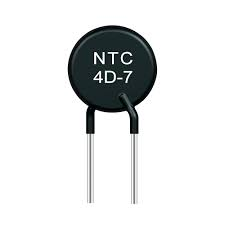
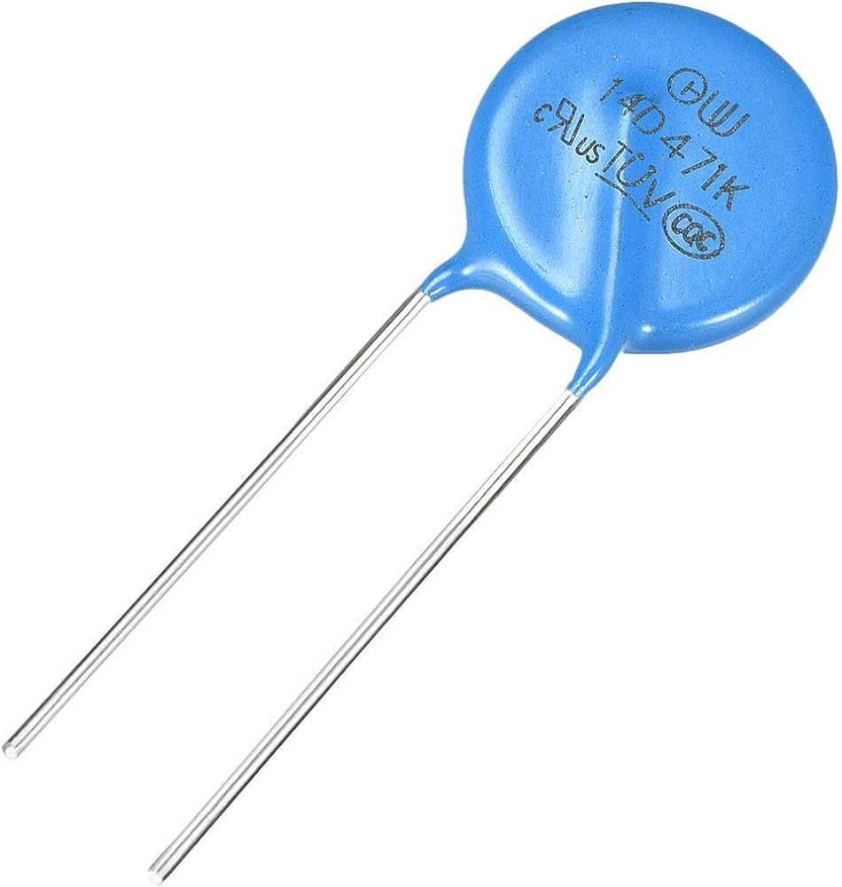

A nonlinear resistor, also known as a non-ohmic resistor, is a type of resistor whose resistance changes with variations in voltage or current in a nonlinear manner
There are four types of Non-linear resistor
1.Thermistor
2.Photo resistor LDR.
3.Varistor resistor.
4.Surface mount.
1.Thermistor: A thermistor is a type of temperature-sensitive resistor whose electrical resistance varies significantly with changes in temperature. The name "thermistor" is a portmanteau of "thermal" and "resistor." Thermistors are widely used in temperature-sensing applications, and their resistance-temperature relationship can be either negative or positive.
2.Photo resistor LDR: A photoresistor, also known as a light-dependent resistor (LDR) or photocell, is a type of resistor whose electrical resistance changes in response to changes in light intensity. Photoresistors are light-sensitive devices that exhibit a decrease in resistance as the illumination on them increases. Conversely, their resistance increases as the light intensity decreases.

3.Varistor resistor: A varistor, short for voltage-dependent resistor, is a type of nonlinear resistor that exhibits a significant change in electrical resistance in response to changes in voltage across its terminals. Varistors are designed to protect electronic circuits from overvoltage conditions by acting as voltage clamping devices.
4.Surface mount: Surface mount refers to a method of assembling electronic components onto the surface of a printed circuit board (PCB) rather than inserting them through holes in the board. This method is in contrast to through-hole technology, where component leads are inserted into holes on the PCB and then soldered to the opposite side. Surface mount technology (SMT) has become widely adopted in electronic manufacturing due to several advantages, including space efficiency, automation capabilities, and the ability to accommodate high-density circuit designs.